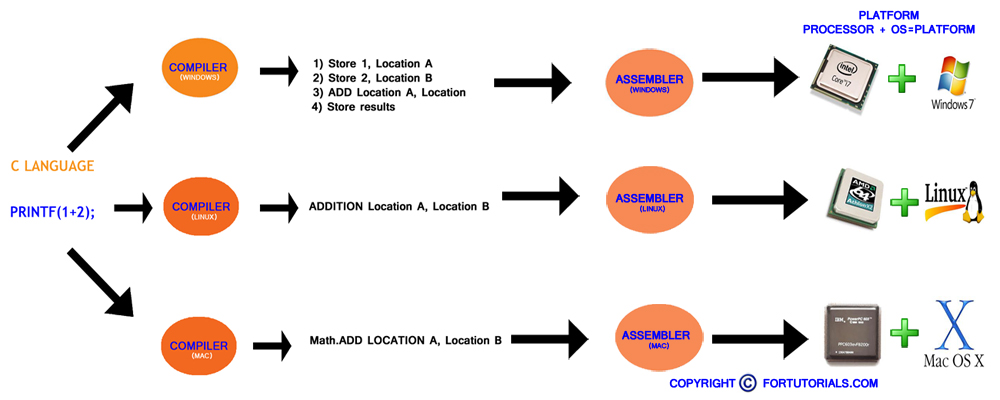
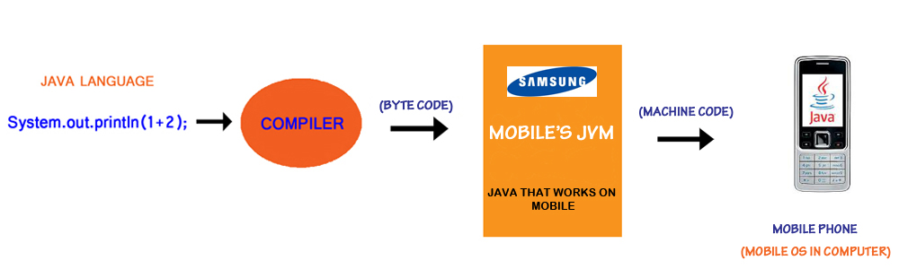
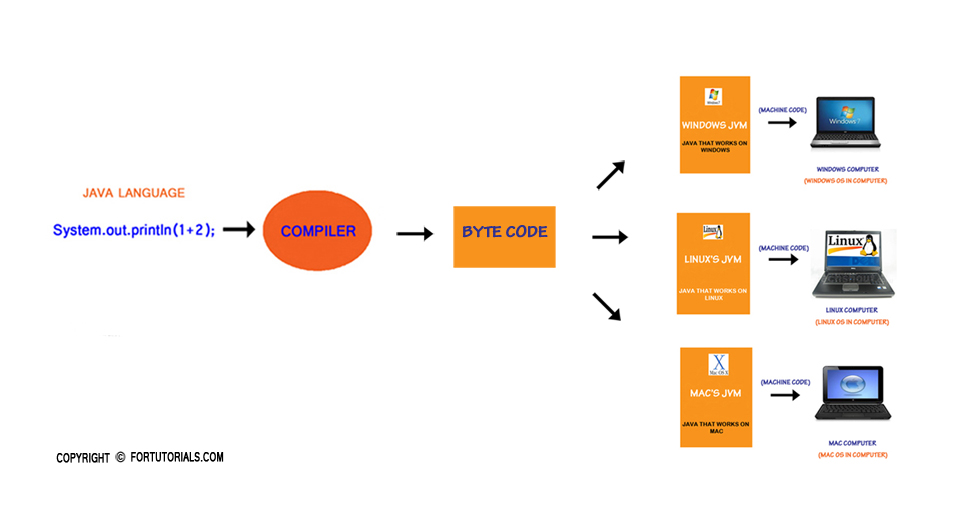

WHY JAVA
Why java?, this is the question everyone had in their mind. We will explain this answer with comparing with c language before going to comparing we have to know about Platform.
What Is Platform? Platform: It is the combination of the Operating System + Processor is called Platform.
Most common platform is Windows +Intel is called winTel platform.
According to C language the assembly language change from platform to platform.
We have to maintain different compilers for different platform for example, you wrote and executed c program in windows (WinTel platform ) , import the compiled program in to linux (Amd+Linux) and run the compiled code in Linux+Amd platform, it gives error so, we have to maintain special linux based c compiler to compile the source program(not compiled) again and then run particular c program in linux platform.
We are doing repeatedly compilation for different platforms, This hole task is not easy and not user friendly. We can see from below figure. This problem is rectified in java. follow Java virtual machine as below.

What Is Java Virtual Machine
To know more about virtual Machine we have know about java. JAVA is the LANGUAGE as well as PLATFORM. It derived from the concepts and libraries of c++ and c. The main motto to develop java is:
”WRITE ONCE AND RUN ANYWHERE”
It means that the java code is compiled once that can run in any system without recompilation.EXAMPLE:
To add two number 1 and 2 the high level program is as follows:
System.out.println(1+2);
JAVA consists of COMPILER and JVM, compiler converts Source file to BYTECODE is not understandable for the any platform only JAVA VIRTUAL MACHINE understands the Bytecode .
JAVA VIRUTAL MACHINE: JVM is platform understand the system it is working(windows), JVM converts the byte code in windows Readable format(.exe) we can see from below figure.

If the Jvm is Mobile platform supported the byte code is converted in to mobile readable format(.jar file games in mobiles). We can see from below figure.

From the above two cases we have to notice that the bytecode is created once that can be given to any platform.it is nothing but
”WRITE ONCE AND RUN ANYWHERE”

NOTE:THIS IS IMPORTANT THAT JAVA SOFTWARE(JVM) IS CHANGING ACCORDING TO PLATFORM(means that windows consists one type of java software(JVM) in .exe format, linux platform consists other type of JVM that support linux) BUT, BYTECODE IS SAME ONCE YOU COMPILED IN ANY PLATFORM SUCH AS WINDOWS, LINUX E.C.T. THAT CAN BE EXECUTED IN ANY PLATFORM WITH OUT RECOMPILIATION. JVM UNDERSATNDS BYTECODE IS CONVERTED INTO PLATFORM IT IS WORKING
DIFFERENCE BETWEEN JVM AND JAVA INTERPRETORThe Java interpreter is actually a part of JVM. Virtual machine is not just executing the bytecodes, it has lot of tasks to do. That full-fledged environment is referred to as JVM.
Finally java made revolution with word WRITE ONCE AND RUN ANYWHERE It is user friendly and easy to run on any platform. This is the main motto of JAVA (JAVA means TO MADE EASY).